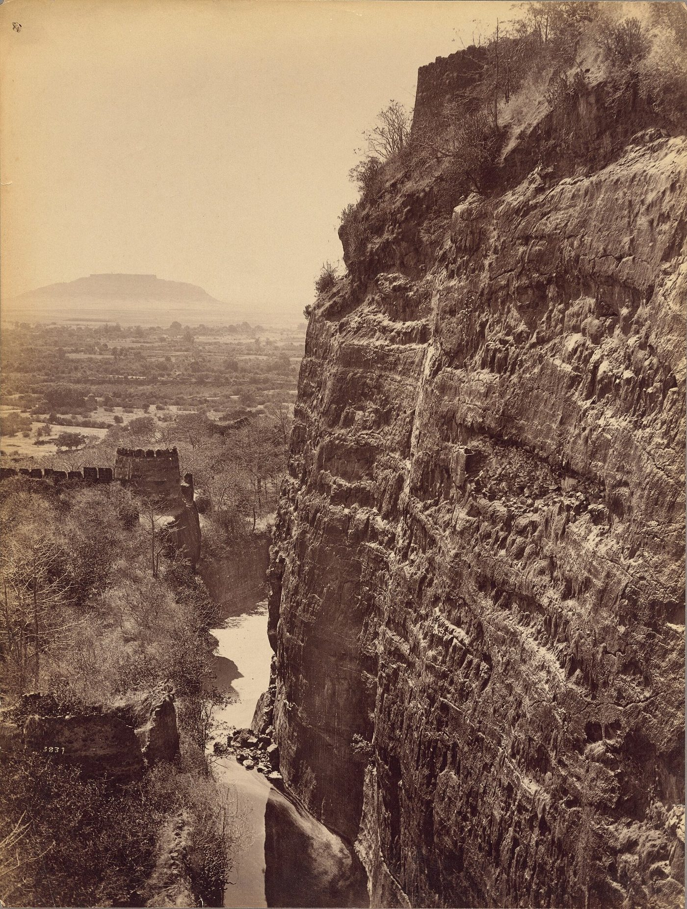
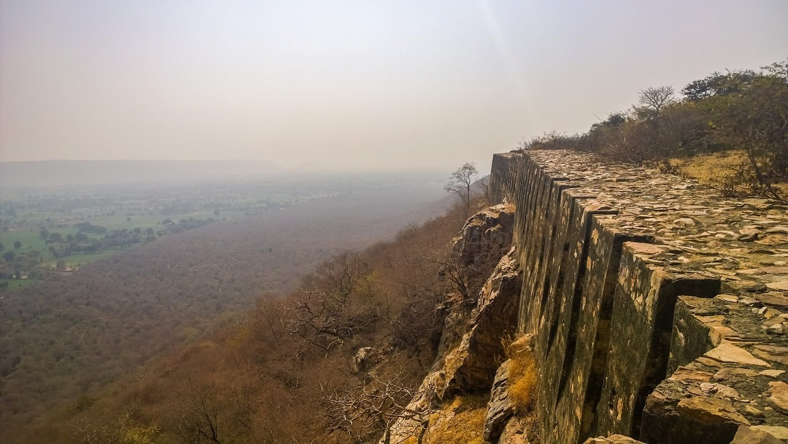
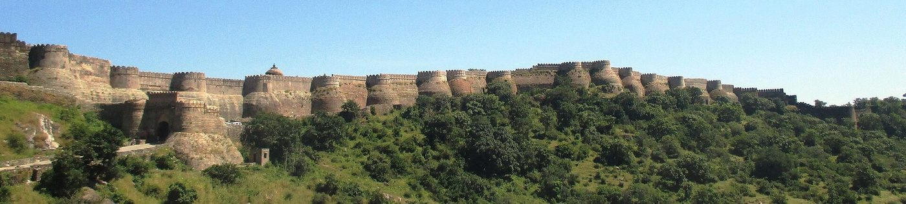
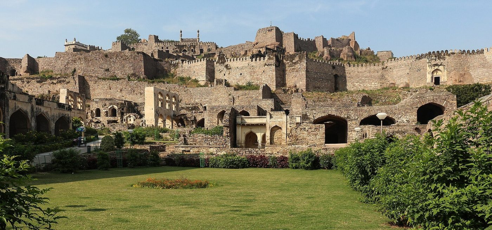
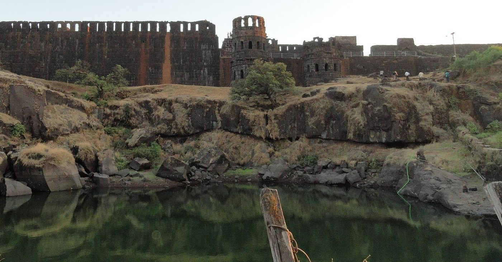
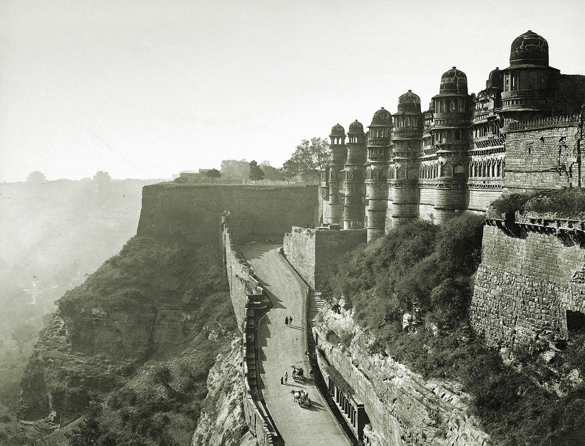
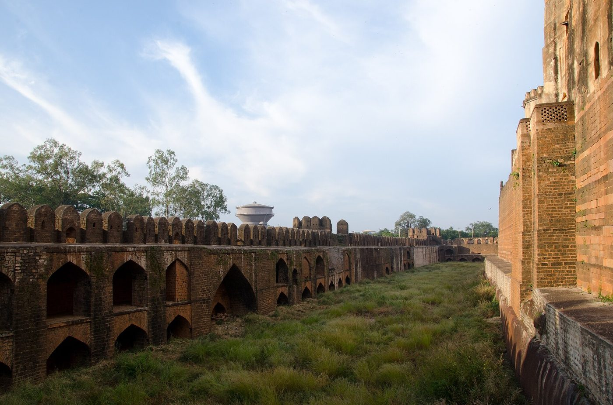
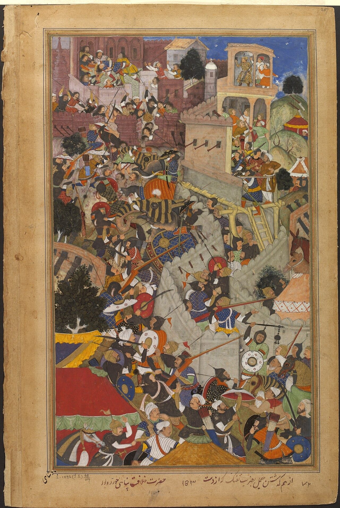
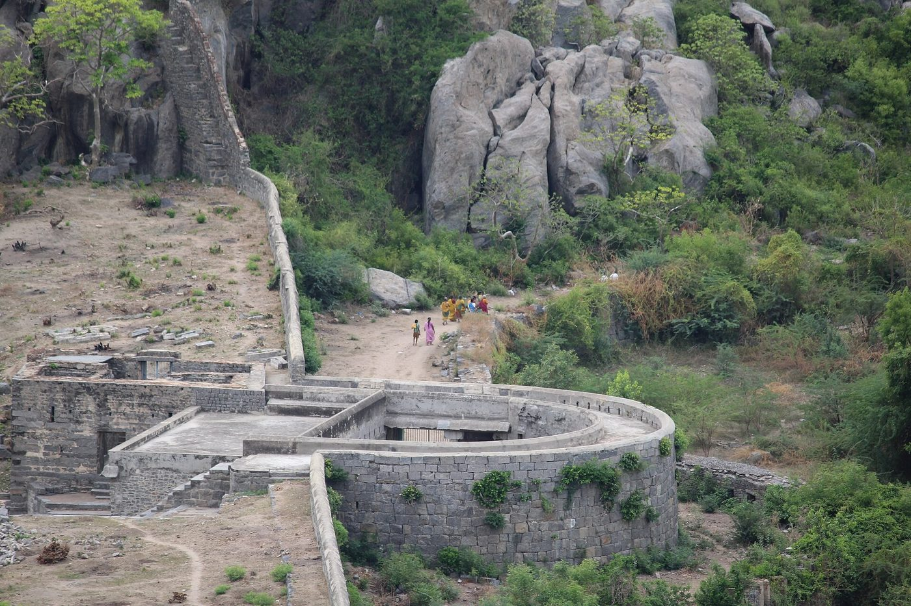
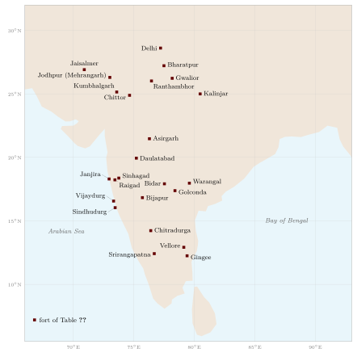

Chapter 10: Forts and Siege Warfare¶
10.1 Introduction¶
The Indian landscape is studded with forts. They crown the flat-topped hills of the Deccan and the Western Ghats, rise above the desert towns of Rajasthan, guard river crossings and passes, and stand on islands and headlands along the coasts. Many of the most important events of Indian military history were sieges rather than battles: Chittor, Ranthambhor, Warangal, Daulatabad, Gingee, Golconda, Bijapur, Srirangapatna. In the texts, the fort (durga) is one of the seven constituents of the state, and the Arthaśāstra devotes chapters both to building forts and to capturing them.
This chapter considers the classification of forts in the texts, the development of fortification from early historic times to the age of artillery, the techniques of siege and defence, and some of the great forts and sieges of Indian history. Jean Deloche’s Studies on Fortification in India and Sidney Toy’s The Strongholds of India are the principal modern surveys (Deloche 2007; Toy 1957).
10.2 The Fort in the Texts¶
10.2.1 Kinds of fort¶
The texts classify forts by the natural feature that protects them (Table 10.1). The Arthaśāstra (AŚ 2.3) names four kinds of natural fort for the defence of the frontier: the water fort (audaka), surrounded by water on an island or by deep pools; the mountain fort (pārvata), on rocky heights or in caves; the desert fort (dhānvana), in waterless country; and the forest fort (vanadurga), surrounded by marsh or thick forest (Kangle 1960–1965). The Mānava Dharmaśāstra gives a list of six: the desert fort, the earth fort, the water fort, the tree or forest fort, the “fort of men” (that is, a fortified place defended chiefly by its garrison), and the hill fort (MDh 7.70); it declares the hill fort the best (Olivelle 2005). Later texts repeat and vary these lists.
| Kind | Source | Later examples |
|---|---|---|
| Water fort (audaka, abdurga) | AŚ 2.3; MDh 7.70 | Janjira; Sindhudurg; moated forts of the plains |
| Hill fort (pārvata, giridurga) | AŚ 2.3; MDh 7.70 | Raigad; Gwalior; Daulatabad; Chittor |
| Desert fort (dhānvana, dhanvadurga) | AŚ 2.3; MDh 7.70 | Jaisalmer |
| Forest fort (vanadurga, vārkṣa) | AŚ 2.3; MDh 7.70 | Forts in the forests of central India |
| Earth fort (mahīdurga) | MDh 7.70 | Mud-walled forts of the Ganges plain |
| Fort of men (nṛdurga) | MDh 7.70 | A city held by a strong garrison |
10.2.2 The fortified capital¶
The Arthaśāstra’s chapters on fort construction (AŚ 2.3–4) describe in detail the fortified capital: three moats filled with water and stocked with crocodiles and lotuses; an earthen rampart, planted with thorny bushes; a wall of brick or stone with towers at regular intervals, crenellations and covered passages; gates with gate-houses and turrets; and inside, a city laid out on a grid with the palace at the centre and the quarters of different occupations in assigned places. The fort was to be stocked with grain, oil, salt, medicines, fodder, firewood, weapons and armour sufficient to withstand a long siege (Kangle 1960–1965; Olivelle 2013). This is an idealised plan, but excavations of early historic cities such as Śiśupālgarh in Odisha, with its square rampart and regular gateways, and the ramparts and moats of other early cities show that fortified towns were common by the late first millennium BCE.
Texts on architecture (vāstuśāstra), such as the Mānasāra and Bhoja’s Samarāṅgaṇasūtradhāra, also discuss forts and fortified towns and prescribe their orientation and layout according to ritual and cosmological principles. The extent to which such prescriptions were followed in the building of actual forts is doubtful; the plans of most surviving forts are determined by the terrain.
10.3 The Development of Fortification¶
10.3.1 Early historic and early medieval forts¶
The walls of the Harappan cities (Chapter 2) were followed, after a long gap, by the fortified cities of the early historic period. Rājagṛha in Bihar was surrounded by stone walls running along the surrounding hills, and Pāṭaliputra, according to Megasthenes, was protected by a timber palisade with towers and a moat. Early historic cities of the Ganges valley, the Deccan and the south had earthen ramparts, often faced with brick, and moats.
In the early medieval period many forts were built on hills, especially in the Deccan, central India and Rajasthan, where flat-topped hills with steep scarps offered natural protection. The approach was guarded by a series of gates on a winding path, and the summit, often large enough to contain fields, tanks and a town, was ringed with a wall that followed the edge of the cliff. Gwalior, Kalinjar, Chittor and Ranthambhor are among the great hill forts of this period, many of them rebuilt and extended by later rulers (Toy 1957).
10.3.2 Rock-cut defences¶
The Deccan forts made extensive use of the rock itself. At Daulatabad (Devagiri), the Yādava capital captured by ʿAlāʾ al-Dīn Khaljī in the 1290s and later the second capital of Muḥammad bin Tughluq, the hill was scarped to form a vertical cliff, a moat was cut around its base (Figure 10.1), and the only access was through a tunnel in the rock that could be filled with smoke and fire. Many Maratha forts have cisterns, gateways and stairways cut into the basalt.


10.3.3 The coming of artillery¶
From the fifteenth century the spread of siege guns forced a transformation. High, thin walls were vulnerable to cannon, and builders responded by thickening walls, backing them with earth, building round and polygonal bastions to mount guns and give flanking fire, adding outer works and lowering the profile of the defences. The great forts of the Deccan sultanates — Bidar, Golconda, Bijapur, Ahmadnagar, Naldurg — show this development clearly, with massive bastions carrying heavy guns such as the Malik-i Maidān at Bijapur (Deloche 2007). Gingee in the Tamil country, with its three fortified hills linked by walls, was strengthened in a similar way. In the eighteenth century European-style bastioned fortification, with angled bastions and outworks designed according to the principles of Vauban, was introduced by the European companies and adopted by some Indian rulers.
10.4 The Great Forts¶
10.4.1 Chittor¶
The fort of Chittorgarh in southern Rajasthan occupies a long flat-topped hill rising above the plain, its walls extending for several kilometres along the edge of the plateau (Figure 10.2); it contains palaces, temples, towers and many tanks and reservoirs. It was the capital of the Sisodiya Rajputs of Mewar, and it was besieged and taken three times: by ʿAlāʾ al-Dīn Khaljī in 1303, by Bahādur Shāh of Gujarat in 1535, and by Akbar in 1567–68. The falls of 1535 and 1568 were accompanied, according to near-contemporary accounts, by a jauhar and a last charge by the men; the jauhar and the story of Padminī that later tradition attached to the siege of 1303 are discussed in Section 16.13.


10.4.2 Kumbhalgarh and the forts of Rajasthan¶
Rāṇā Kumbhā of Mewar built or rebuilt many forts in the fifteenth century, of which the largest is Kumbhalgarh, on a ridge of the Aravallis. Its outer wall winds for many kilometres over hills and valleys (Figure 10.3); the length is often given as about 36 kilometres, and popular accounts describe it, with some exaggeration, as the second-longest wall in the world after the Great Wall of China. The desert fort of Jaisalmer, built of yellow sandstone, still contains a living town; Mehrangarh at Jodhpur, Amber and Jaigarh near Jaipur, and Ranthambhor in eastern Rajasthan, are among the other great Rajput forts.


10.4.3 Golconda and the Deccan forts¶
Golconda, near Hyderabad, was the capital of the Qutb Shāhī sultans. Its citadel on a granite hill is surrounded by an outer town and by a massive wall with many bastions (Figure 10.4), and it had an elaborate system of water supply. Guides tell visitors that a hand-clap at the main gate can be heard at the top of the hill; the acoustics of the gateway are indeed striking, but the claim that they were designed as a signalling system is local tradition. Aurangzeb besieged Golconda for eight months in 1687 and took it only when a gate was opened by a bribed officer; as the Arthaśāstra had advised, treachery was often the quickest way into a fort (Richards 1993).


10.4.4 The Maratha hill forts¶
The Maratha country had hundreds of forts. Śivājī captured, rebuilt or built many of them, and the Ājñāpatra (1716) declares that the kingdom’s strength lies in its forts. Raigad, his capital, sits on a massive plateau surrounded by cliffs, reached by a single path (Figure 10.5); Rajgad, Torna, Sinhagad, Purandar and Pratapgad were among the other key forts. Their importance lay not only in their individual strength but in the network: forts controlled passes and routes, served as bases for raids and as treasuries and prisons, and could be held by small garrisons. Mughal armies under Aurangzeb took many of them, often by bribery or after long sieges, but the Marathas retook them as quickly (Gordon 1993). The number of forts in Maratha hands is often given as over three hundred; such numbers include many minor posts.


10.4.5 Sea forts¶
The coasts had their own forts. Janjira, an island fortress off the Konkan coast held by the Siddī rulers of African descent, resisted Maratha attacks throughout the seventeenth and eighteenth centuries. Śivājī built Sindhudurg on an island near Malvan in the 1660s and strengthened Vijaydurg, which became the base of the Maratha navy (Chapter 11). On the Kerala coast, Bekal and other forts guarded harbours and river mouths. Building on islands and reefs required foundations laid in tidal water; Maratha tradition says that lead was poured into the foundations of Sindhudurg, a detail difficult to verify.
10.5 The Forts of Delhi¶
The successive cities of Delhi show the development of fortification in north India over five centuries. The Tomar and Cauhan rulers of the eleventh and twelfth centuries built the stone citadel of Lāl Kot and the walls of Qilaʿ Rāi Pithorā, which the Ghurid conquerors occupied after 1192. ʿAlāʾ al-Dīn Khaljī built a new walled city, Sīrī, around 1303, partly as a defence against the Mongols, who had besieged Delhi that year (Jackson 1999). Ghiyāth al-Dīn Tughluq built the massive fortress of Tughluqabad in the 1320s, with sloping walls of rubble masonry and great round bastions. Sher Shāh and Humāyūn built the Purāna Qilaʿ, and Shāh Jahān built the Red Fort (Lāl Qilaʿ) of his new capital Shāhjahānābād between 1639 and 1648. By the time the Red Fort was built, the walls of a capital were as much an expression of imperial dignity as a military defence, and the fortress-palaces of the Mughals at Agra, Lahore and Delhi combined both functions.
10.6 More Great Forts and Sieges¶
Gwalior.
The fort of Gwalior, on a long sandstone hill in central India, was held successively by many dynasties and was famed for its strength. The Tomar ruler Mān Singh built its palace, the Mān Mandir, in the late fifteenth century, with its façades of coloured tiles (Figure 10.6). Gwalior was used by the Mughals as a state prison.


Kalinjar.
The hill fort of Kalinjar in Bundelkhand was held by the Candellas and resisted Maḥmūd of Ghazni. In 1545 Sher Shāh Sūr was killed during his siege of Kalinjar when a store of gunpowder or rockets exploded near him, a striking example of the dangers of the new weapons to their users.
Asirgarh.
Asirgarh, a hill fort commanding the route from north India into the Deccan through Khandesh, was regarded as one of the strongest forts in India. Akbar besieged it in 1600–1601; it surrendered after a long siege, in which disease among the garrison and, according to some accounts, bribery played a part.
Gingee and Vellore.
In the Tamil country, Gingee, the refuge of the Maratha king Rājārām, withstood a Mughal siege for eight years (Section 10.15). Vellore, with its moated stone walls, was a Vijayanagara and later Carnatic stronghold, and the scene of the sepoy mutiny of 1806 (Chapter 19).
Sinhagad.
Among the Maratha forts, Sinhagad near Pune is remembered for its capture in 1670 by Tānājī Mālusare, who scaled its cliffs at night with a small party and was killed in the fighting; according to a popular story, his men climbed with the help of a monitor lizard used to secure a rope. The story is a legend, but the night escalade of cliffs was a real Maratha technique (Gordon 1993).
Bharatpur.
The Jat fortress of Bharatpur, with its thick walls of rammed earth surrounded by a wide moat, absorbed the shot of the Company’s artillery and repulsed four assaults in 1805. It was taken in 1826 only after mines blew breaches in its walls. Its earth walls illustrate the effectiveness of a traditional technique against artillery.
10.7 Forts of the South¶
South India has its own great forts. Chitradurga in central Karnataka, built and extended by the Nāyaka chiefs of the region from the sixteenth to the eighteenth century and later by Haidar Ali, covers a group of rocky hills enclosed by several concentric lines of walls of massive granite blocks, with many gates, bastions, granaries and water tanks. Local tradition tells of Obavva, the wife of a guard, who during Haidar Ali’s siege is said to have killed a number of enemy soldiers one by one with a pestle as they crept through a narrow opening in the rock; she is commemorated as a heroine in Karnataka, though the story rests on local tradition. Haidar took Chitradurga in 1779.
Bidar, capital of the Bahmanī sultans from the 1420s and later of the Barīd Shāhī dynasty, is one of the finest examples of the Deccan fortification of the fifteenth and sixteenth centuries, with a triple moat cut into the rock (Figure 10.7) and walls and bastions designed to mount guns (Deloche 2007). In the Tamil country, Vellore and Gingee (Section 10.15) and the fort of Dindigul on its rock, and on the Kerala coast, the laterite forts of Bekal, Kannur and Palakkad, show the variety of southern fortification. Tipu Sultan’s forts on the Malabar coast and in Mysore incorporated European ideas of bastioned design.


10.8 The Ahom Earthworks¶
The Ahoms of Assam developed a different style of fortification adapted to the Brahmaputra valley. Rather than stone forts on hills, they built long earthen ramparts (gaḍ), ditches and bamboo stockades, which could be constructed quickly by the mass labour of the paik system, and they combined them with the river and its islands. In the war against the Mughals in the 1660s and 1670s, Ahom commanders built lines of earthworks across the valley to block the invaders’ advance along the river and its banks; Lachit Borphukan’s defence of Guwahati before the battle of Saraighat in 1671 (Section 9.11) relied on such works (Gait 1906). The Ahom earthworks show that Indian fortification was not a single tradition but a set of regional responses to different terrains and resources.
10.9 European Forts in India¶
The European companies built forts to protect their trading settlements. The Portuguese fortified Goa, Diu, Daman, Bassein, Cochin and other ports in the sixteenth century, with walls and bastions in the style of contemporary European military architecture; Diu withstood sieges by the Gujarat sultanate and the Ottomans in 1538 and 1546. The English built Fort St George at Madras from 1640 and Fort William at Calcutta; the French built Fort Louis at Pondicherry; the Dutch fortified Cochin, Negapatam and other ports (Pearson 1987). After the Company’s victory at Plassey, a new Fort William was built at Calcutta on the model of the latest European designs, with angled bastions and outworks.
These forts were small compared with the great Indian fortresses, but they could be held by small garrisons with artillery and supplied by sea, and they served as bases for the Companies’ expansion. Indian rulers took note: Tipu Sultan and others employed European engineers to modernise their own fortifications.
10.10 City Walls and Temple Fortifications¶
Cities as well as hill forts were fortified. Vijayanagara, the capital of the southern empire, was surrounded by several lines of walls; the Persian envoy ʿAbd al-Razzāq, who visited it in 1443, described seven concentric fortifications enclosing fields, gardens and the city itself, and the surviving remains confirm walls of massive dry masonry with gateways and bastions running across the rocky landscape (Stein 1989). Many north Indian cities, including Delhi, Agra, Lahore and Ahmedabad, were walled, and the walls served both for defence and for the control of trade and movement.
In south India, the great temple complexes, with their high enclosing walls and towered gateways, could be used as fortresses. In the Carnatic wars of the eighteenth century, the temple-towns of Srirangam and others were occupied and fortified by the armies of the Company, the French and their Indian allies, and the temples served as strongpoints and barracks. This use of sacred spaces in war was regretted by many contemporaries, but it was a natural consequence of the strength of their walls.
10.11 Fortified Villages and Local Defence¶
Not all fortifications were great royal forts. Throughout India, villages, towns and the houses of local landholders were fortified with mud walls, ditches, thorn hedges and small towers, as protection against raiders, rival lords and armies. In north India the fortified mud houses (gaṛhī) of landholders were centres of local power, and the East India Company spent years in the early nineteenth century demolishing them; in Rajasthan and Gujarat, villages had walls and gates; in the Deccan and the south, small hill forts and fortified villages (koṭṭai) were held by local chiefs. These modest defences, often invisible in the grand narratives of war, were an essential part of the military landscape, and they reflect the chronic insecurity of rural life in many periods. Kolff’s military labour market and the world of fortified villages were two sides of the same coin: a society in which force was widely distributed and armed men were everywhere (Kolff 1990).
10.12 The Administration of Forts¶
Forts needed garrisons, supplies and administrators, and states developed systems to manage them. The Arthaśāstra assigns forts to a commandant and prescribes the stores of grain, oil, salt, medicines, weapons and fuel they must hold (Section 10.2). The Mughals appointed a commandant (qilʿadār) to each important fort, often an officer of rank, responsible for its garrison, stores and security; forts also served as treasuries, arsenals and prisons for important captives.
The Maratha state under Śivājī developed a particularly careful system. According to the Marathi chronicles and the Ājñāpatra, each fort was placed under several officials of different castes who checked each other: a commandant (havāldār), an accountant (sabnīs) and an officer in charge of stores (kārkhānīs), so that no single man could betray the fort. Garrisons were recruited from the local hill peasantry, and the forts were kept supplied with grain and water for long sieges (Gordon 1993). The Ājñāpatra declares that the kingdom’s strength rests on its forts and gives detailed advice on their maintenance, the selection of their officers and the storage of supplies. This system helps to explain the Maratha forts’ resilience during the long Mughal campaigns in the Deccan.
10.13 Water¶
A fort was only as strong as its water supply. The great forts of India contain remarkable systems of tanks, cisterns, step-wells and channels to capture and store the monsoon rain. Chittor has many tanks; Raigad and other Maratha forts have rock-cut cisterns; Golconda had a system of pipes and lifting devices to raise water to the citadel; the desert forts of Rajasthan collected rainwater in underground tanks. A besieger’s first aim was often to cut off the water supply, and a defender’s to protect it. The step-well (vāv, bāolī), a characteristic architectural form of western India, served both forts and towns.
10.14 The Siege¶
10.14.1 Methods in the Arthaśāstra¶
The thirteenth book of the Arthaśāstra is devoted to capturing a fort. Its recommendations, in order, are: to win over the defenders by propaganda and intrigue (upajāpa), using secret agents to spread rumours and stir up discontent; to entice the enemy out by stratagems; to place spies inside the fort; to blockade it (paryupāsana), cutting off supplies and starving the garrison; and only as a last resort to storm it (avamarda) (Kangle 1960–1965; Olivelle 2013). The text explains that a direct assault is costly in lives and should be undertaken only when the fort’s supplies are exhausted or its defenders weakened. Its list of siege methods includes mining under walls, breaching with elephants and machines, setting fire to the fort by means of incendiary devices, and diverting or poisoning the water supply.
The order of preference reflects economy, not humanitarian restraint: subversion and starvation are cheaper than assault. The Arthaśāstra’s advice is in this respect similar to that of other ancient treatises on war, and to the practice of medieval and early modern armies.
10.14.2 Sieges in practice¶
Medieval and early modern sieges were usually long. The Persian chronicles describe the sultans’ armies investing a fort, building lines of circumvallation, raising earthen mounds (pāshīb) and covered approaches (sābāṭ) towards the walls, bombarding the defences with trebuchets and, later, cannon, and digging mines under the walls to blow breaches with gunpowder (Jackson 1999; Gommans 2002). Akbar’s siege of Chittor in 1567–68 used all these methods, including two great mines whose explosion killed many of the attackers as well as the defenders. Sieges could last months or years: Ranthambhor resisted ʿAlāʾ al-Dīn for many months in 1301, Chittor in 1303 for about eight months, and Gingee resisted the Mughals for some eight years.
Hunger, disease and the season often decided the outcome. Besieging armies had to feed themselves in country they had often devastated; many sieges were abandoned when the monsoon arrived or when the besiegers’ supplies ran out. Equally often, forts fell by negotiation or treachery: a commander was bribed, a gate opened, a garrison allowed to depart on terms.
10.14.3 Defence¶
Defenders used all the means available. They kept large stores of grain and water; they made sorties to destroy siege works; they dug counter-mines; they threw stones, burning materials and, later, grenades from the walls; they mounted guns on the bastions; and they built new walls behind breaches. The Arthaśāstra and later texts describe machines on the walls for throwing missiles and dropping heavy objects on attackers. Defenders also negotiated, sought relief from allies, and used spies of their own.
10.15 Three Sieges¶
Three sieges, from different periods, illustrate how forts were attacked and defended in practice.
10.15.1 Chittor, 1567–68¶
Akbar’s siege of Chittor is one of the best documented sieges in Indian history, described in the Mughal chronicles and remembered in Rajput tradition. The Rāṇā of Mewar, Udai Singh, withdrew to the hills, leaving the fort under the command of Jaimal Rāṭhor and Patta Sisodiya. Akbar’s army invested the fort in October 1567. Unable to take it by assault, the Mughals built covered approaches (sābāṭ) towards the walls — protected passages wide enough for horsemen, built under fire at great cost in labourers’ lives — and dug mines under the walls. When two mines were fired, one exploded while the attacking troops were rushing into the breach made by the other, killing many of them. In February 1568, during a night attack, Jaimal, who was directing repairs to a breach, was killed by a musket shot fired, according to the Mughal accounts, by Akbar himself (Figure 10.8). The defenders performed the jauhar, and the next morning the men came out to fight to the death. The Mughal army stormed the fort, and a large number of defenders and of the peasants who had taken refuge inside were killed; the Mughal chronicles record the massacre without apology (Richards 1993). According to later accounts, including that of the French traveller François Bernier, statues of Jaimal and Patta mounted on elephants stood at the gate of the Mughal fort, a sign of the respect in which brave opponents could be held.


10.15.2 Gingee, 1690–98¶
The siege of Gingee in the Tamil country shows the problems of a long siege at the end of a long supply line. After the Maratha king Rājārām took refuge there in 1689, a Mughal army under Zulfiqār Khān besieged the fort. The three hills of Gingee, each fortified and linked by walls (Figure 10.9), were difficult to invest completely; Maratha armies operating outside the fort harassed the besiegers and cut their supplies, and the Mughal commanders were accused of prolonging the siege for their own advantage. Gingee fell only in 1698, after Rājārām had escaped. The siege tied down a large Mughal army for eight years, contributing to the exhaustion of Aurangzeb’s resources (Richards 1993; Gordon 1993).

_1.jpg){kind=link}
10.15.3 Srirangapatna, 1792 and 1799¶
The sieges of Srirangapatna, Tipu Sultan’s capital, show the warfare of the late eighteenth century. In 1792 a Company army under Lord Cornwallis, with Maratha and Hyderabad allies, stormed Tipu’s fortified camp outside the city and invested the fortress; Tipu agreed to a treaty that ceded half his territories and handed over two of his sons as hostages. In 1799 a larger Company army besieged the city again. Siege batteries were built opposite the north-western corner of the walls, where the river was fordable, and after several days of bombardment a breach was made. The assault on 4 May 1799 carried the breach, and Tipu was killed defending the walls. The siege was decided by heavy artillery, careful siege engineering and the disciplined assault of European and sepoy infantry — the methods of the European siege warfare that the Company had brought to India (Roy 2011).
10.16 The Fall of Daulatabad¶
The fortress of Daulatabad (Devagiri), described earlier for its rock-cut defences, was taken several times in its history: by ʿAlāʾ al-Dīn Khaljī’s raid in the 1290s, and in 1633 by the Mughals from the Ahmadnagar sultanate. The Mughal siege of 1633, under Mahābat Khān, combined bombardment, mining and the blockade of the fort until famine forced its surrender. The capture of Daulatabad effectively ended the Ahmadnagar sultanate (a puppet Niẓām Shāhī king, upheld by Shāhjī Bhosale, held out until 1636) and opened the Deccan to further Mughal expansion. The history of this “impregnable” fortress illustrates a general truth: no fort could resist indefinitely an enemy who controlled the surrounding country and could prevent relief, and the strength of a fort lay above all in the time it bought for its defenders.
10.17 Forts as State Prisons¶
Forts were not only military strongholds but also places of confinement for those whom rulers wished to keep alive but powerless. The Mughals used the fort of Gwalior as a state prison for royal princes and other political prisoners. After the war of succession of 1657–59, Aurangzeb imprisoned his brother Murād Bakhsh at Gwalior, where he was executed in 1661, and Dārā Shukoh’s son Sulaimān Shukoh died there in captivity soon afterwards (Richards 1993). Sikh tradition remembers the detention of Guru Hargobind at Gwalior by the emperor Jahāngīr, and his release, which is commemorated in the festival of Bandī Chhoṛ Divas (Grewal 1990).
The practice continued under the East India Company. After the fall of Srirangapatna in 1799, the family of Tipu Sultan was confined in the fort of Vellore; the mutiny of the Vellore garrison in 1806, provoked by new regulations on dress and appearance, took place within its walls (Chapter 19). In 1816 the last king of Kandy in Sri Lanka, deposed by the British the year before, was sent to Vellore as a state prisoner and died there. Other forts were turned into jails and arsenals. In this way the strongholds of the older states became instruments of the new one, before many of them were abandoned or, in the twentieth century, preserved as monuments.
10.18 The End of the Fort¶
The importance of forts declined in the nineteenth century. Heavy siege artillery could breach most walls; armies that controlled the countryside and the sources of revenue could isolate forts and wait for their surrender; and the colonial state, once established, had no need of most forts and dismantled or abandoned many of them. Some were used as barracks, prisons or arsenals; others were left to decay. In the twentieth century many were protected as monuments, and they now form one of the most visible parts of India’s architectural heritage. Table 10.2 lists some of the forts mentioned in this chapter and elsewhere in this volume, with their type and some of the events associated with them, and Figure 10.10 shows where they stand.

| Fort | Region; type | Notes |
|---|---|---|
| Gwalior | Central India; hill | Held by many dynasties; Mān Mandir palace; Mughal state prison |
| Kalinjar | Bundelkhand; hill | Candella stronghold; Sher Shāh killed at its siege, 1545 |
| Chittor | Rajasthan; hill | Sisodiya capital; sieges of 1303, 1535, 1567–68 |
| Ranthambhor | Rajasthan; hill and forest | Taken by ʿAlāʾ al-Dīn Khaljī, 1301 |
| Kumbhalgarh | Rajasthan; hill | Built by Rāṇā Kumbhā; very long outer wall |
| Jaisalmer | Rajasthan; desert | Sandstone fort enclosing a living town |
| Mehrangarh | Rajasthan; hill | Rathor fort at Jodhpur |
| Delhi (Sīrī, Tughluqabad, Red Fort) | North India; city | Successive fortified capitals, 12th–17th c. |
| Daulatabad | Deccan; scarped hill | Yādava Devagiri; taken by the Mughals, 1633 |
| Asirgarh | Khandesh; hill | Gateway to the Deccan; taken by Akbar, 1601 |
| Bidar | Deccan; plateau | Bahmanī capital; triple rock-cut moat |
| Golconda | Deccan; hill and city | Qutb Shāhī capital; taken by Aurangzeb, 1687 |
| Bijapur | Deccan; city | ʿĀdil Shāhī capital; Malik-i Maidān gun |
| Raigad | Maharashtra; hill | Śivājī’s capital; coronation, 1674 |
| Sinhagad | Maharashtra; hill | Taken by Tānājī Mālusare, 1670 |
| Janjira | Konkan; sea | Siddī stronghold, never taken by the Marathas |
| Sindhudurg | Konkan; sea | Built by Śivājī in the 1660s |
| Vijaydurg | Konkan; sea | Maratha naval base; taken in 1756 |
| Gingee | Tamil Nadu; hills | Mughal siege, 1690–98 |
| Vellore | Tamil Nadu; moated plain | Vellore mutiny, 1806 |
| Chitradurga | Karnataka; hills | Nāyaka fort; taken by Haidar Ali, 1779 |
| Srirangapatna | Karnataka; island | Tipu Sultan’s capital; stormed 1799 |
| Bharatpur | Rajasthan; mud | Resisted the Company in 1805; taken 1826 |
| Warangal | Telangana; concentric walls | Kākatīya capital; taken 1323 |
10.19 Forts, Power and Memory¶
Forts were more than military installations. They were royal residences, treasuries, prisons and administrative centres; they were symbols of sovereignty, so that the capture of a fort meant the submission of its ruler; and they became sites of memory. The stories of heroic defence and jauhar at Chittor, the legends of Śivājī’s forts, the memorials of sieges in inscriptions and ballads, all show how forts entered regional identities. Today many of these forts are protected monuments and tourist sites, and six hill forts of Rajasthan are inscribed together on the World Heritage list. Their study, combining archaeology, architectural history and the military history of sieges, remains one of the most rewarding fields in the history of Indian warfare.